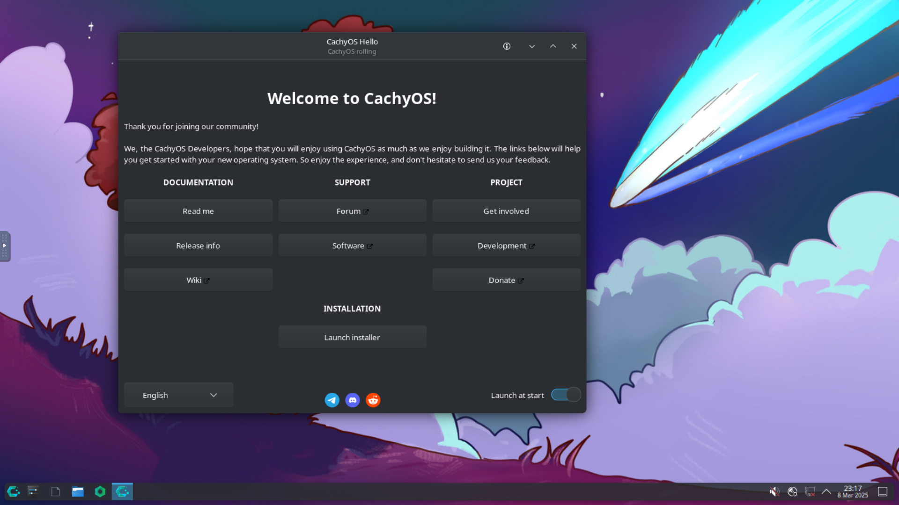

CachyOS

CachyOS is a performance-tuned Arch-based distro designed to squeeze maximum responsiveness out of your hardware. It uses a custom kernel with the BORE or EEVDF scheduler, ships packages compiled specifically for modern x86-64 CPUs, and comes ready for gaming out of the box, all while staying as close to vanilla Arch as possible.
Desktop Environment
KDE Plasma (default)
Package Manager
pacman / AUR
Latest Release
Rolling
Init System
systemd
Support Cycle
Rolling
Architecture
x86_64, x86-64-v3, x86-64-v4
Key Features
- BORE/EEVDF kernel scheduler for lower latency and better responsiveness
- x86-64-v3 optimized packages, compiled for modern CPUs, not 2003 hardware
- CachyOS repository with performance-patched versions of common packages
- zram swap enabled by default for faster system under memory pressure
- Gaming-ready out of the box with Steam and Proton support
- Full AUR access, same package ecosystem as Arch Linux